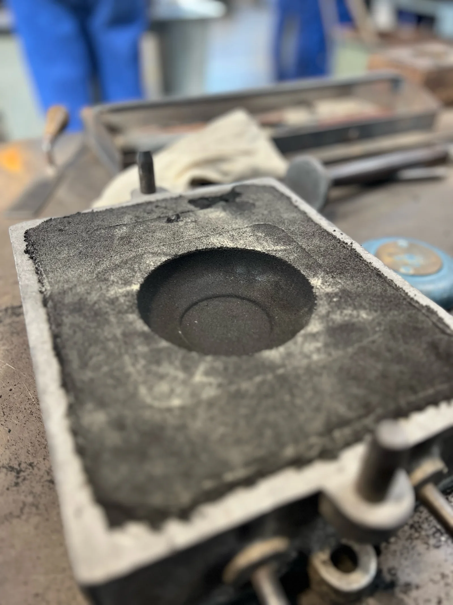
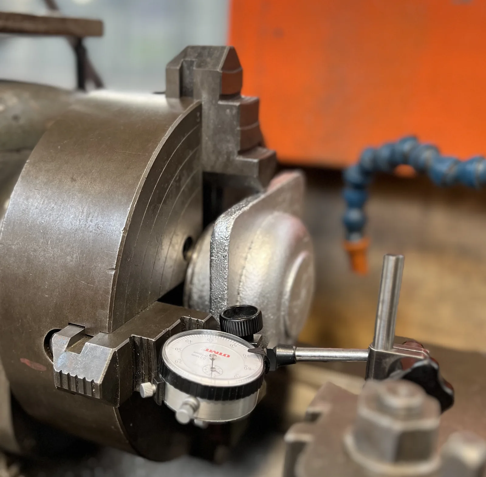
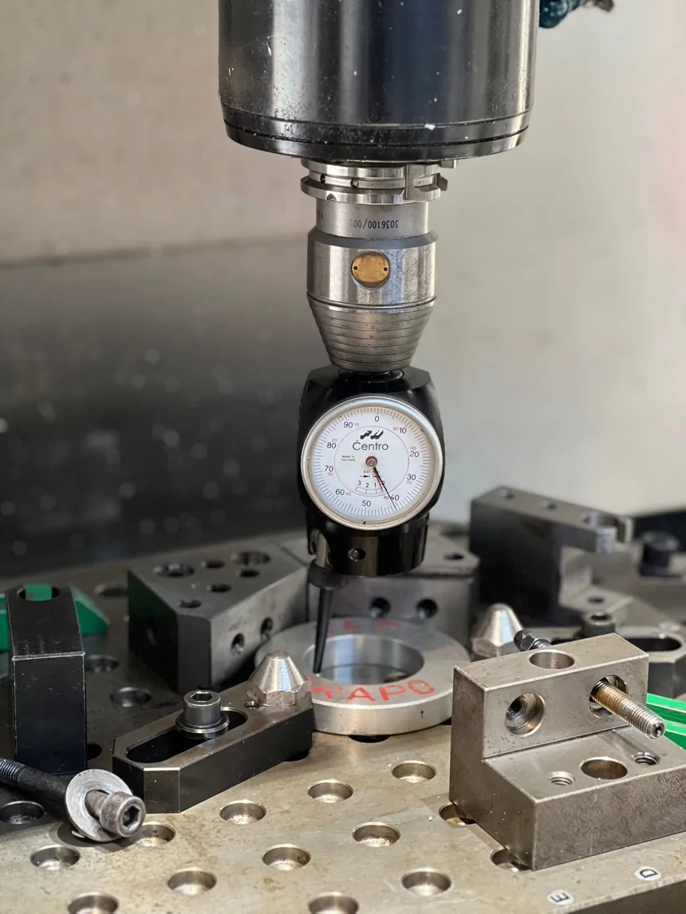
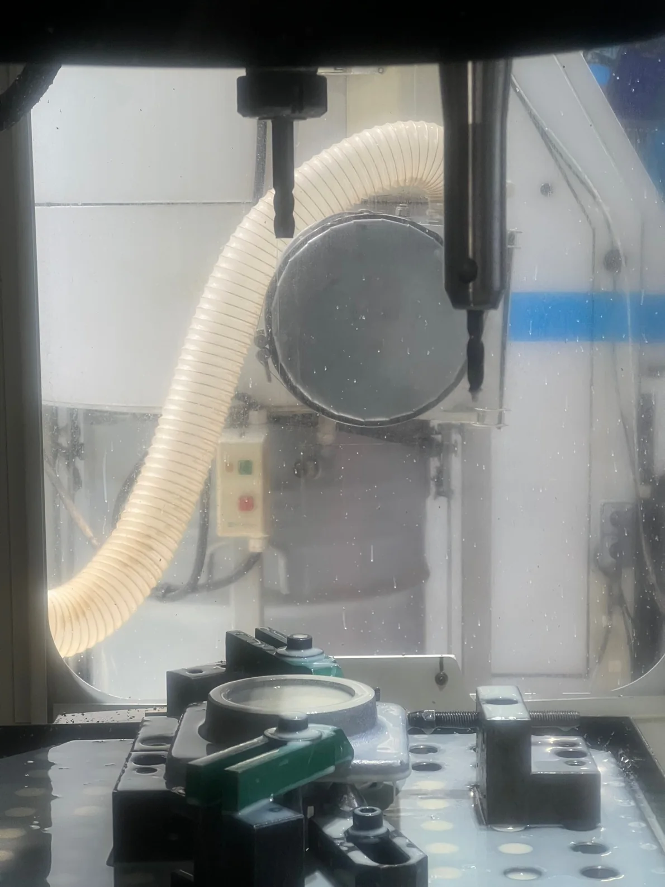
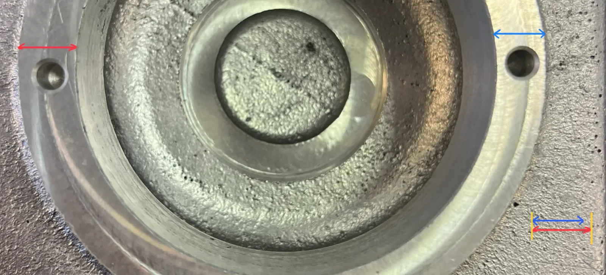

// PRODUCTION · FONDERIE · MÉTROLOGIE
De la fonderie à la métrologie
Industrialisation d'un boîtier de butée à billes AlSi7 par fonderie, usinage conventionnel et CNC, puis contrôle dimensionnel.
01 — Fonderie
Concevoir la pièce brute avant de couler le métal
Préparation du moule
La conception de la pièce moulée devait fournir suffisamment de matière pour un usinage ultérieur tout en restant simple et robuste en atelier. Le plan de joint choisi permet au noyau de rester stable sous l'effet de la gravité sans support supplémentaire à haute température.
- Surépaisseurs d'usinage ajoutées aux surfaces critiques.
- Angles de dépouille intégrés pour un démoulage en toute sécurité.
- Aucun évent n'est nécessaire car le sable est naturellement perméable.
- Aucune contremarche n’a été utilisée car l’épaisseur des parois a été jugée suffisamment uniforme.
- Les trous et les fils ont été intentionnellement fermés pour le moulage.


02 — Usinage
Construire des références précises en deux phases
Tournage conventionnel
La pièce moulée brute a été maintenue dans des mâchoires dures et alignée avec un indicateur à cadran avant d'usiner les principales surfaces de référence. La surface D a été privilégiée car sa tolérance était plus stricte que les exigences générales ISO 2768-mK appliquées ailleurs.
L'ancien tour SIM était limité à 2 800 tr/min. Un réglage conservateur de 1 000 tr/min a été choisi pour des raisons de sécurité, en dessous de l'optimum théorique pour les outils choisis, un compromis qui pourrait affecter l'état de surface et la répétabilité.


CNC contourage et perçage
Un dispositif dédié maintenait la position spécifiée pendant que la machine CNC effectuait le contourage, le perçage, le chanfreinage et le taraudage. L'origine était réglée avec un indicateur, et une lubrification abondante contrôlait la chaleur et permettait une finition de surface plus propre.
- Engagement de contour plutôt que fente sur toute la largeur.
- Vitesse de broche adaptée à la limite de 7 500 tr/min de la machine.
- Profondeur de coupe validée au fur et à mesure dans les conditions d'atelier.



03 — Diagnostic
Lorsqu'un parcours d'outil correct ne peut pas récupérer une ébauche déficiente

Raisonnement par la cause profonde
Une surépaisseur insuffisante est apparue dans une zone localisée. Le programme CNC ayant été validé, l'explication principale n'était pas le parcours d'outil lui-même mais la géométrie et le positionnement de l'ébauche coulée.
- Le modèle de coulée ou le noyau nécessite une surépaisseur supplémentaire dans la zone affectée.
- Un décalage du noyau ou du moule peut avoir introduit une asymétrie globale.
- Le référencement en phase 200 pourrait amplifier une erreur déjà présente dans la pièce brute.
- Une vérification des surépaisseurs avant usinage permettrait de détecter le problème avant l'enlèvement de matière critique.

Préparer une deuxième itération
- Augmentez les surépaisseurs d'usinage locales et revalidez la géométrie du noyau.
- Harmoniser le montage, les références et la procédure de mise à l'origine de la phase 200.
- Inspectez l'ébauche avant l'usinage CNC pour confirmer la répartition des surépaisseurs.
- Produisez une deuxième version pour vérifier la répétabilité avant d’envisager un processus en série.
04 — Métrologie
Transformer les mesures en preuves de fabrication
Résultats de l'inspection géométrique
Une machine à mesurer les coordonnées a échantillonné chaque élément et reconstruit les éléments géométriques associés. Les résultats montrent que certaines opérations étaient contrôlées, tandis que d'autres révèlent l'effet accumulé de la géométrie du flan et du référencement.
Planéité E
ConformeMesuré 0.015Limite 0,100 mm
Cylindricité A
Proche de la limiteMesuré 0.018Limite 0,020 mm
Perpendicularité
Non conformeMesuré 0.116Limite 0,100 mm
Position
Non conformeMesuré 0.750Limite 0,100 mm

La qualité finale ne se construit pas uniquement pendant l’usinage. Elle résulte d’une chaîne cohérente associant conception de la pièce brute, mise en position, conditions de coupe et mesure.
Le projet a relié un défaut visible et mesuré les non-conformités à leurs causes probables en amont. Cette lecture causale constitue la base de la correction du modèle de coulée, de la sécurisation de la configuration de l’usinage CNC et du passage d'un prototype d'atelier à un processus contrôlé et reproductible.